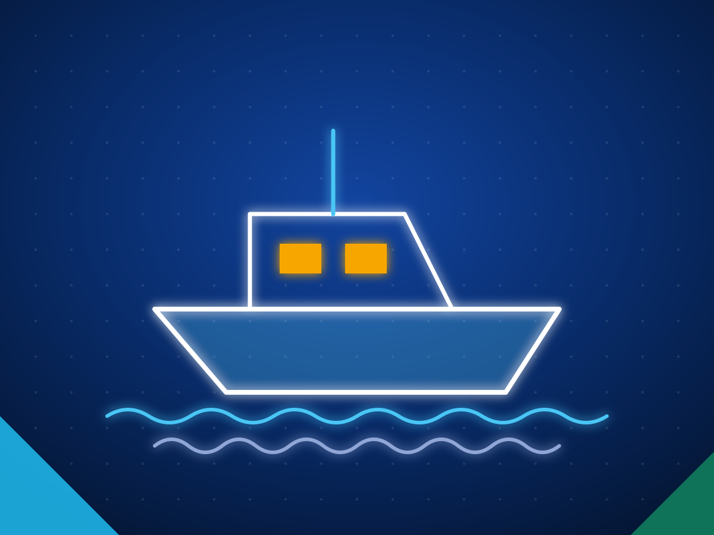
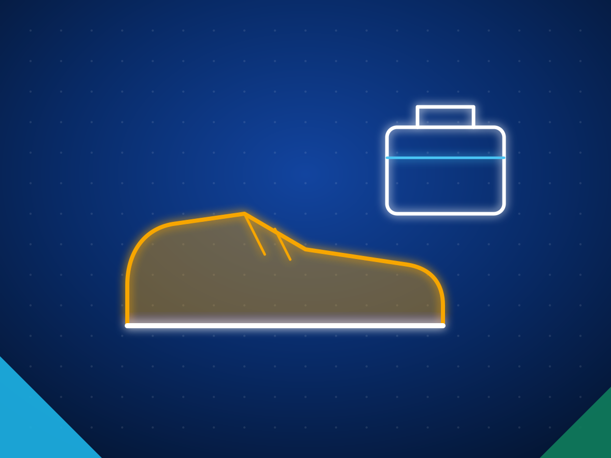
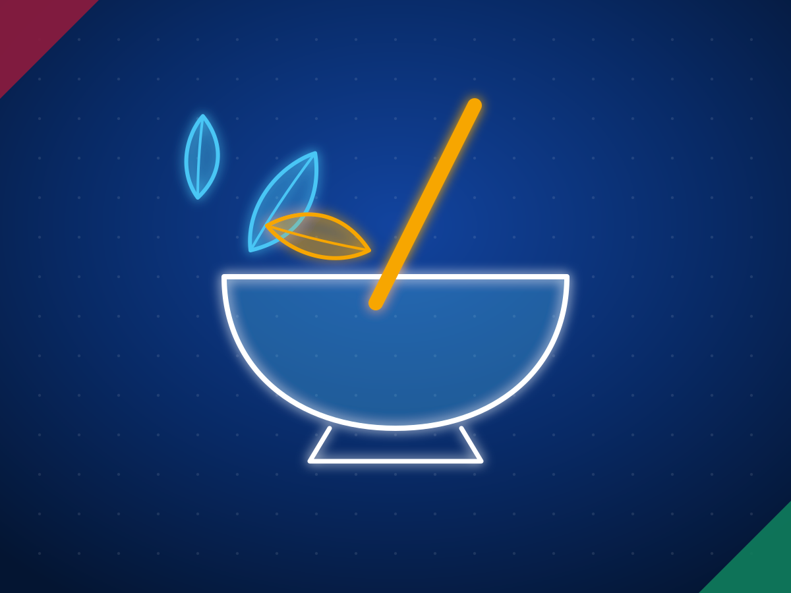

Source from Sri Lanka: export products, exporters and how to buy
Sri Lanka exported US$13.58 billion of goods in 2025. The largest categories are apparel, tea, coconut products, rubber products, food and beverages, spices and electrical components, and the fastest growing in January to September 2026 are electrical and electronic components, up 61%, and spices and essential oils, up 30.5%. Buyers in the US, India, the UK and the EU source Ceylon tea and cinnamon, coconut and coir products, industrial tyres and gloves, apparel and a widening range of electrical goods. We match buyers with Sri Lankan exporters who make what they need and check them before we introduce them.
Last reviewed 27 October 2026. Figures are from the Export Development Board, with sources linked. We do not name buyers. How we check
- US$13.58B
- merchandise exports in 2025, up 6.32%
- US$10.76B
- merchandise exports, January to September 2026, up 5.35%
- +61%
- electrical and electronic components, January to September 2026
2025 figures: Export Development Board via Daily FT. 2026 figures: Export Development Board, January to September 2026.
How we help you buy from Sri Lanka
Tell us the spec
Product, grade, quantity, packing, destination port, the certificates you need and when you need the first shipment.
We shortlist exporters
We match you with Sri Lankan exporters who make that product and already ship to markets like yours, and check them before we introduce them.
You deal direct
Quotes and samples come from the exporters themselves and you choose. We stay on hand for the factory visit, the first order and the first shipment.
What Sri Lanka exports, by category
Sources: Export Development Board, 2025 export performance and January to September 2026; gems from the EDB gem sector page. ICT and BPM services, US$1.64 billion in 2025, are covered in our outsourcing section.
Full tables by product line and by country, with a CSV: Sri Lanka export statistics 2025 and 2026.
Buying for a specific market
What each market buys from Sri Lanka, the duty it pays and the import rules to check:
Browse by product
 Apparel and textilesActivewear, intimates, swimwear, workwear and fabrics.
Apparel and textilesActivewear, intimates, swimwear, workwear and fabrics. Ceylon teaBulk, packets, tea bags, green, white and instant tea.
Ceylon teaBulk, packets, tea bags, green, white and instant tea. Ceylon cinnamonAlba quills, powder, cut sticks, leaf and bark oil.
Ceylon cinnamonAlba quills, powder, cut sticks, leaf and bark oil. Coconut food productsDesiccated coconut, milk, cream, powder and VCO.
Coconut food productsDesiccated coconut, milk, cream, powder and VCO. Coco peat and coirCoco peat blocks, grow bags, coir fibre, twine, husk chips.
Coco peat and coirCoco peat blocks, grow bags, coir fibre, twine, husk chips. Coconut shell activated carbonGranular, powdered and pellet activated carbon, shell charcoal.
Coconut shell activated carbonGranular, powdered and pellet activated carbon, shell charcoal. Industrial and solid tyresSolid forklift tyres, press on bands, OTR and agri tyres.
Industrial and solid tyresSolid forklift tyres, press on bands, OTR and agri tyres. Rubber gloves and rubber productsExamination, surgical, industrial and household gloves, seals, mats.
Rubber gloves and rubber productsExamination, surgical, industrial and household gloves, seals, mats. Electrical and electronicsCables, transformers, switchgear, panels and PCBA.Spices and essential oilsPepper, cloves, nutmeg, cardamom, oils and oleoresins.
Electrical and electronicsCables, transformers, switchgear, panels and PCBA.Spices and essential oilsPepper, cloves, nutmeg, cardamom, oils and oleoresins. Processed food and beveragesBiscuits, sauces, jams, cordials, drinks and feed.
Processed food and beveragesBiscuits, sauces, jams, cordials, drinks and feed. SeafoodYellowfin tuna, swordfish, shrimp, crab and lobster.
SeafoodYellowfin tuna, swordfish, shrimp, crab and lobster. Gems and jewelleryCeylon sapphire, padparadscha, spinel and cut diamonds.
Gems and jewelleryCeylon sapphire, padparadscha, spinel and cut diamonds. Light engineering and machineryPumps, engines, boilers, castings and fabrication.
Light engineering and machineryPumps, engines, boilers, castings and fabrication.
Boats and marineFibreglass boats, workboats, catamarans and patrol craft.Fruits and vegetablesPineapple, banana, papaya, king coconut water, gherkins.Cut foliage and live plantsCut foliage, pot plants, aquarium plants and cuttings. Ornamental fishGuppies, freshwater and marine aquarium fish.Ceramics and porcelainPorcelain tableware, hotelware, tiles and ornaments.
Ornamental fishGuppies, freshwater and marine aquarium fish.Ceramics and porcelainPorcelain tableware, hotelware, tiles and ornaments. Printing and packagingCartons, labels, tags, books and paper products.Wood products and furnitureRubberwood furniture, flooring, brush handles and toys.
Printing and packagingCartons, labels, tags, books and paper products.Wood products and furnitureRubberwood furniture, flooring, brush handles and toys.
Footwear and leather goodsShoes, safety boots, sole crepe and leather goods.Graphite and mineralsVein graphite, ilmenite, quartz and mica.
Ayurveda and herbal productsHerbal teas, oils, balms and natural cosmetics.What we check before we introduce an exporter
- The company is registered in Sri Lanka and listed as an exporter, through the Export Development Board directory or a chamber of commerce.
- The certificates you asked for exist, are current and cover the site that will make your order.
- It has shipped this product to your region before, and can show export documents or a buyer reference.
- It has the capacity for your volume and your delivery dates.
- A video call or a visit to the factory, on request, before you pay a deposit.
Trade access in one view
- European Union: GSP+ since 2017 removes EU duties on 66% of tariff lines, including textiles and fisheries. European Commission
- New EU GSP rules apply from 1 January 2027, and current beneficiaries such as Sri Lanka must reapply by 31 December 2028. Daily Mirror
- United Kingdom: Enhanced Preferences under the Developing Countries Trading Scheme, with zero duty on more than 7,000 product lines. EDB
- India: most Sri Lankan origin goods enter duty free under a free trade agreement in force since 2000, apart from a negative list and quota items. EDB
- Singapore: a free trade agreement in force since 2018 phases out tariffs on 80% of tariff lines over up to 15 years. Enterprise Singapore
- United States: in July 2026 Sri Lanka was placed in the 10% Section 301 tariff category, added on top of normal duties. News First
Documents, shipping, payment and the steps to a first order are in our guide: how to import from Sri Lanka.
For Sri Lankan exporters
Tender Radar
International tenders matched to what you make, sent to your WhatsApp, with a read on whether to bid.
See Tender RadarBid support and export consultancy
Decoding the tender, the compliance matrix, technical and commercial submissions, and the market entry work around them.
See bid supportCommon questions
What are Sri Lanka's main export products?
By value in 2025: apparel and textiles (US$4.91 billion), tea (US$1.51 billion), coconut products (US$1.23 billion), rubber products (US$946 million), food and beverages (US$584 million), spices and essential oils (US$450 million), electrical and electronic components (US$438 million), gems, diamonds and jewellery (US$334 million) and seafood (US$240 million), according to the Export Development Board.
What is Sri Lanka famous for exporting?
Ceylon tea and Ceylon cinnamon, Ceylon sapphires, coconut and coir products, solid tyres, where the Export Development Board estimates Sri Lanka has about a quarter of world demand, rubber gloves, apparel and vein graphite.
Which countries buy the most from Sri Lanka?
In 2025 the largest markets were the US (US$3.0 billion), India (US$1.04 billion), the UK (US$929 million), Germany (US$706 million) and Italy (US$680 million).
How do I find reliable exporters in Sri Lanka?
Start with the product and the certificates you need, check registration and export history, and see samples before a first order. Send us a request for quote and we introduce exporters we have checked.
Does Sri Lanka have trade agreements that cut import duties?
Yes. The EU gives GSP+ access, the UK gives Enhanced Preferences, and Sri Lanka has free trade agreements with India, Pakistan and Singapore. Our import guide covers each one.